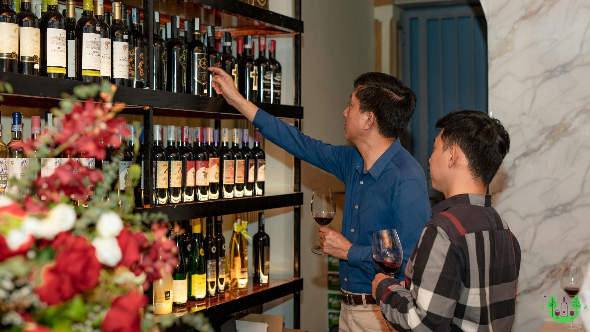

About Us
Xofyne lahir dari sebuah visi untuk menghadirkan produk eksklusif yang menggabungkan inovasi, kualitas, dan sentuhan tropis yang memikat. Berawal dari kecintaan terhadap buah-buahan eksotis dan potensi fermentasi, Xofyne berkembang menjadi destinasi utama bagi pecinta minuman berbasis buah, terutama fruit wine dengan cita rasa unik. setiap produk Xofyne dirancang untuk menggambarkan kekayaan rasa buah tropis Indonesia.
.
Dengan rasa creamy dan cita rasa manis yang berpadu dengan sedikit sentuhan pahit alami dari durian, wine ini menawarkan pengalaman yang berbeda dibandingkan dengan wine berbasis buah lainnya.
Rp. 329.000
Order Now Online Available At Oflline StoreMemiliki profil rasa yang lebih seimbang, dengan karakter asam segar yang memberikan kesan tropis yang menyegarkan. Aromanya lebih lembut dibandingkan varian lainnya, menjadikannya pilihan wine yang ringan dan menyegarkan.
Rp. 223.900
Order Now Online Available At Oflline StoreWine tropis premium dengan rasa manis eksotis khas mangga namdokmai. Kelembutan buah berpadu dengan aroma alkohol yang kuat, menciptakan pengalaman rasa yang kaya dan kompleks, sempurna untuk dinikmati dalam suasana santai.
Rp. 223.900
Order Now Online Available At Oflline StoreSebuah minuman fermentasi unik yang menghadirkan kehangatan rasa pisang matang dengan sentuhan manis alami dan sedikit kriminess. Fermentasi menghasilkan aroma lembut yang kaya, dengan sedikit karakter tropis yang menyegarkan.
Rp. 223.900
Order Now Online Available At Oflline StoreWine eksotis dengan karakteristik rasa khas salak yang unik, menghadirkan kombinasi manis, sedikit asam, dan sedikit sepat yang kompleks. Aroma buah tropisnya berpadu sempurna dengan karakter fermentasi yang tajam dan khas.
Rp. 329.000
Order Now Online Available At Oflline Store
Watermelon Fruit Wine
Fermentasi semangka menghasilkan profil rasa yang sedikit manis dengan keseimbangan asam yang halus, menjadikannya pilihan wine tropis yang mudah dinikmati dalam suasana santai atau sebagai pendamping hidangan ringan.
Rp. 329.000
Order Now Online Available At Oflline StoreContact Us And Find us

Jl. Wijaya I No.49, RT.10/RW.5, Petogogan, Kec. Kby. Baru, Kota Jakarta Selatan, Daerah Khusus Ibukota Jakarta 12170
013413110
xofynewinery@gmail
instaragam: @xofyneid